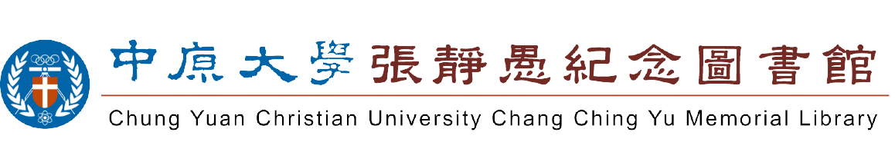
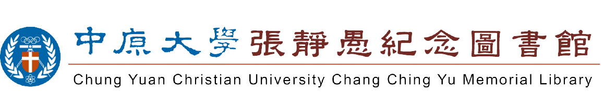

由來與簡介

本校圖書館成立於民國四十四年，創校之初，暫以行政大樓西首為館舍。民國五十三 年於行政大樓東側興建圖書館大樓一座。後隨學校擴展、系所增加，原有硬體設備已 不敷使用，乃於七十一年規畫興建新館，於民國七十四年落成啟用；為紀念本校已故 張董事長靜愚先生，命名為「張靜愚紀念圖書館」。
館內同時提供七十餘台電腦供讀者使用。除此之外，並提供下列服務：圖書館導覽、
資料庫講習、參考諮詢、資料庫檢索指導、網路資源利用、館際合作影印／借書等，
協助全校師生充分利用掌握館內外及網路上豐富的資源。
本圖書館採用的自動化系統為引進自國外的Ｓｉｅｒｒａ整合性自動化系統。全校師
生可透過該自動化系統於校內外便捷的查詢本館的全部藏書或是使用全文電子資源，
也可透過一站式的資源探索服務系統（ＥＤＳ），與世界各地的網路資料庫連線查詢
教學研究所需的資訊。除此之外，圖書館也提供電子新聞、電子新書通報、電子流通
通知單等服務，並設有全球資訊網，整合上述各項服務於圖書館網頁上。
明月前身室
本館於81年2月在圖書館四樓成立特藏室，佔地123.82平方公尺(37.46 坪)，105年4月，本館因感念王秋華建築師慷改解囊，捐贈500萬元實物 設計，重新打造圖書館二樓為通透明亮、人性化的空間，將「設計與藝 術圖書室」更名為「明月前身圖書室」。王建築師親撰簡歷、簽名，更 依「雪舍」(王秋華建築師宅)書櫃同尺寸，訂製贈送大型書櫃二座，及 書籍 189冊，陳列於明月前身圖書室，嘉惠中原師生。

初期收藏藝術相關大尺寸圖書、畫冊及國父思想等書籍為主，後因配合 本校設計學院教學與研究發展，嚴選典藏範圍，於104年6月將特藏室更 名為「設計與藝術圖書室」，收藏以相關美術、設計、建築、攝影、裝 飾、工藝、文物、圖案等以圖片為主之中、西文圖書，提供設計學院師 生及愛好藝術、設計、建築之讀者豐富資源。
基督史料室
過去，中原大學為了紀念創校董事長張靜愚先生，將佔地三千六百餘坪 的新建圖書館，命名為張靜愚紀念圖書館。迄今，已有近百萬冊的藏書 ，為中原人不可或缺的精神食糧。為慶賀中原大學60歲的生日，本館特 別設置「基督教史料室」，並以之為特色典藏。
「基督教史料室」設置於本館四樓，佔地約七十坪。它並不單單是一個 貯藏教會書籍的房間，而是朝著兩方面在發展：一，與本校宗教研究所 配合，形成一個教會史的研究中心，使典藏、教學、研究、推廣合而為 一。二，除了工具書和各種各樣珍貴的聖經版本外，中國教會史與台灣 教會史是特色典藏的重心。
主題式區域
在這裡的書每段時間都會換一次主題，像是：
「我，是誰」，獻給在人生道路上常常迷失自己以及不知道如何與自己
相處的你，利用閱讀帶給你力量，找回內心最深沉的聲音。
「開源節流好時機」，精選 63 本理財之書，內容包含股票、保險及日
常理財等等，相信透過這些分類的書籍，可以有新的理財收穫。雖然賺
錢不容易，但只要好好運用，開源的同時搭配節流，就能讓存款慢慢往
上升，有錢之路，你我不缺席！
學校配備了36台電腦在此供大家做資料查詢的服務。具本館有效借書權
限的讀者以itouch或圖書館帳密登入使用，為避免佔位及有效控管電腦
資源，讓每位師生都可公平使用，所有電腦滿座時可預約電腦座位。
另外此專區提供影印及網路列印服務，另備有掃描機供讀者免費使用。